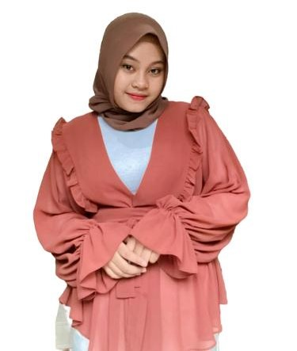

Dinda Sela Listiana

Hubungi Saya
|
Profil
Saya Dinda Sela Listiana, Lahir di Bandar Lampung, 16 April 2002.
Saya merupakan mahasiswi semester 5 prodi Teknik Informatika di Institut Teknologi Sumatera.
Pendidikan
- SDN 2 Sumberrejo Bandar Lampung (2008)
- SMPN 13 Bandar Lampung (2014)
- SMA YP UNILA Bandar Lampung (2017)
- Institut Teknologi Sumatera (2020)
Pengalaman
- Staff OSIS SMPN 13 Bandar Lampung (2014-2015)
- MC Perpisahan (2016)
- Anggota Forum Anak Kota Bandar Lampung(2018-2020)
- Time Keeper First Gathering 2020(2022)
- Bendahara Malam Keakrban 2020(2022)
- Staff Divisi Kaderisasi Himpunan Mahasiswa Informatika (2022)
Keterampilan
- Canva
- Microsoft Word/Excel/Power Point
- MC
|